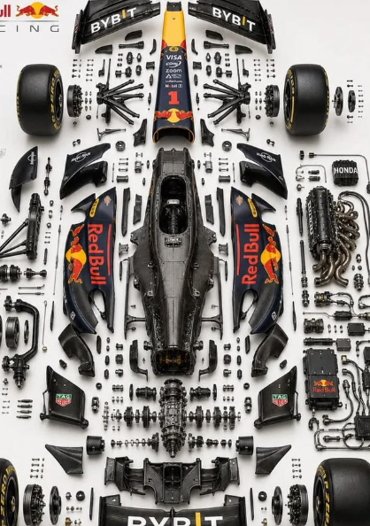
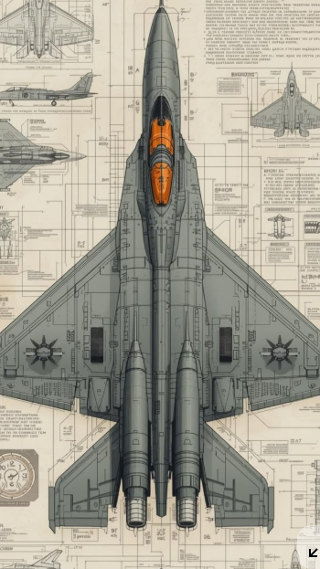
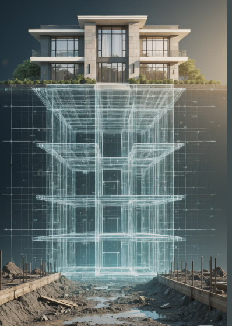

ENGINEERING CONTINUITY
설계 변경 하나를 회사 성과까지 추적합니다.
도면, 리비전, BOM, 일정, 원가가 서로 다른 파일과 시스템에서 끊어지지 않도록 제품개발 데이터를 하나의 맥락으로 관리합니다.



ENGINEERING CONTINUITY
도면, 리비전, BOM, 일정, 원가가 서로 다른 파일과 시스템에서 끊어지지 않도록 제품개발 데이터를 하나의 맥락으로 관리합니다.



ONE IDENTITY · ONE PRODUCT DATA
SSO와 역할 기반 접근을 출발점으로 각 조직이 필요한 Clip 제품과 같은 제품 데이터에 연결됩니다.
PRODUCT FILM
항목을 선택하면 실제 제품 영상과 화면이 바뀝니다. 화면에 보이는 수치는 기능 설명을 위한 데모 데이터입니다.
 PRODUCT UI · DEMO DATA
PRODUCT UI · DEMO DATA
MULTI-BOM · EPL
각기 다른 최상위 완성품(0 Level)을 개별 BOM으로 유지하면서, 모든 하위 레벨의 구조를 펼쳐 비교하고 생성·조회·수정·삭제할 수 있습니다.

서로 다른 완성품 BOM 관리
레벨을 펼쳐 직접 편집
환경에 맞춰 데이터 입력 연계
BOM 변경을 원가 판단으로 연결
CAD 직접 연계 범위는 사용 CAD와 라이선스, 고객 환경에 따라 협의합니다. AutoCAD·SolidWorks 연계와 PDF 기반 Import를 지원하며 CATIA 직접 연계는 별도 개발 범위입니다.
PROJECT EXECUTION · AI ASSISTANT
임원·팀장·개인 대시보드에서 필요한 관점으로 프로젝트를 보고, 고객 대일정과 Gate 지연을 확인한 뒤 AI 챗봇으로 관련 데이터를 찾습니다.

BOM TO COST
설계 변경과 BOM 구조 변화는 재료비, 공정, 일정의 판단 기준이 됩니다. Clip CMS는 원가 데이터를 제품개발 맥락과 연결하도록 구성합니다.
SAP·UniERP 등 ERP 데이터 인터페이스는 고객 데이터 구조와 운영 정책에 맞춰 협의·구축합니다.